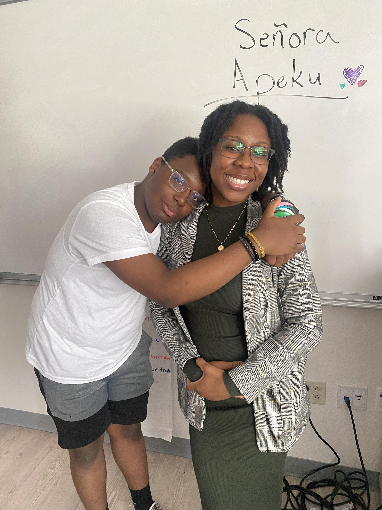
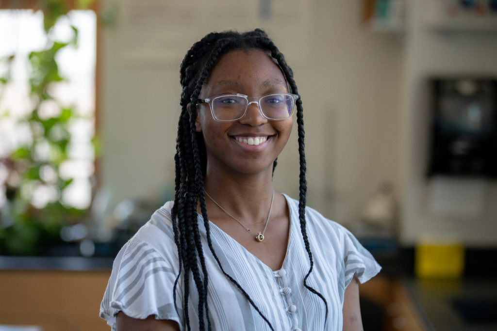

My Favorite Teacher from Each Year
Freshman Year
Ms. Lin's 4th period class was definietly the best class to be in freshman year. Constant experiements, memes, and fun ways to learn was always her thing. Especially in the OG room that she had on the 2nd floor (before she moved to the 4th floor).

Ms. Nam's class was right after Ms. Lin. A classic thing for me to do will be to call Ms. Nam, "Ms. Lin" (due to me having a period before her) and sometimes even vice versa (I promise, it was not on purpose). One of the best things about Ms. Nam was that she would always take the time to answer questions about worldy things.
Once, we spent the entirety of class (a 2 period block btw) talking about black representation in Movies.
Sophomore Year

MY FAVORITEEEEEEEEEEEEEEEEEEEEEEEEEEEEEEEEEEEEEEEEEEEEEEE TEACHER, on my WORST subject. (Amazingly ironic). Ms. Apeku's class was the best way to end the day, and each day was ever so fun. (We were also the smartest class anyways).

Ms. Worthy was NOT playing with us the first few months when us students met her. (:sob emoji) However as the year went by and I got to know her more (and she became more lenient), she definietly deserves to be on my top 3 favorite IT teachers.
Junior Year

Mr. Morton was one of those "I'm Chill if you're Chill" teachers and was definietly memorable as well. Although he cusses like a sailor (am I aloud to say this? wait he don't go there no more, and it was out of school anyways), he was definietly a good person to ask for advice, knowledge, or in my case a very COMPETITIVE person to workout with.
Although strict on her detention policies (sob emoji again), and pairing me with Edison for most of the year (UGHHHHHHHHHHHHHHHHHH), Ms. Oliver was definietly someone I appreciated for helping me go through the hardest year ever (even if I did sleep a couple of times, but I mean I finished my work and extra credit sooooooo). OH! And THANK YOU ALWAYS for supporting me through my lifting meets.
Senior Year

Ms. Pathan is like the 2nd mom of the school. "CARL, MINUS TWO FOR TALKING", ... 30 minutes later... "Do u want some candy?" (Granted, I do talk a lot in her class. But it's not MY fault :C).